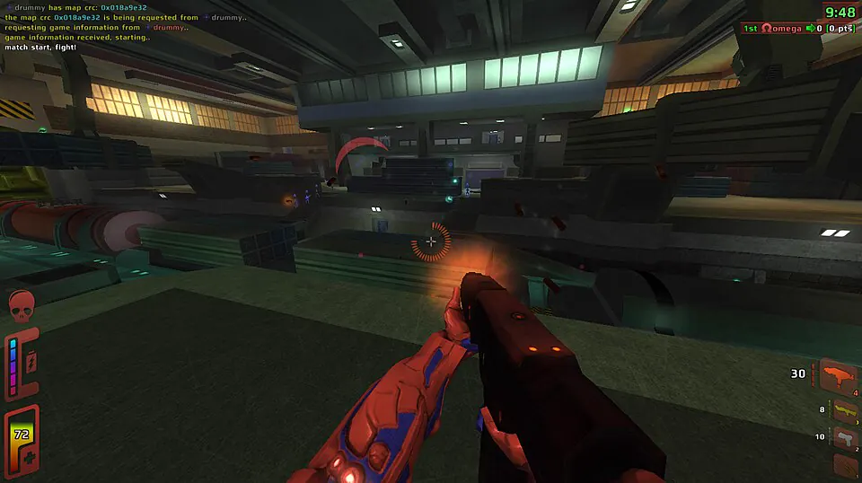
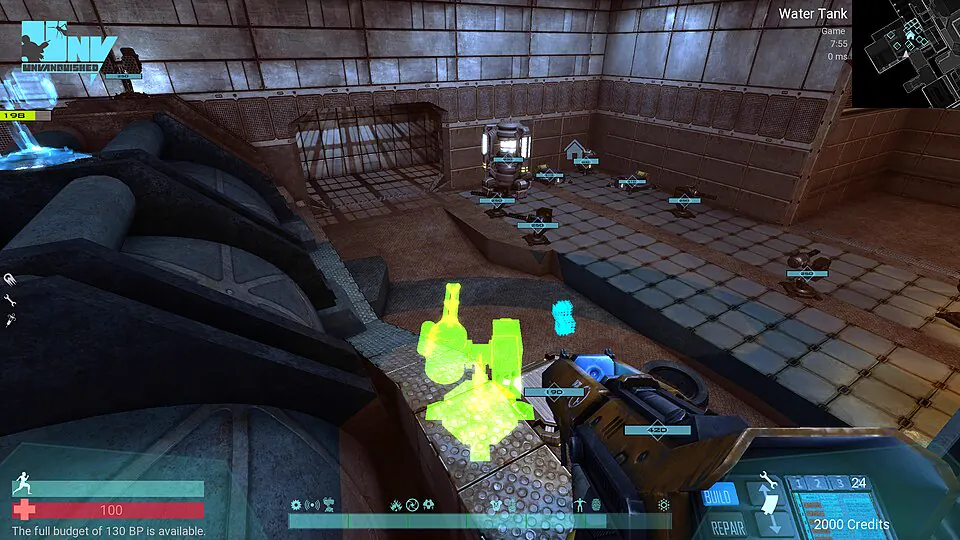
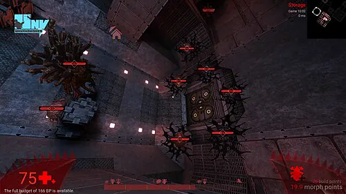

Junta kills num só clipe
O F9 salva 8 segundos antes da kill e 2 depois. Outra kill em até 6 segundos vira x2.
- Clipe de kill salvo, x3Red Eclipse, 14 segundos
- Clipe de kill salvo, x2Unvanquished, 12 segundos
- Clipe salvoSpeed Dreams, 60 segundos
O Glint guarda na memória os últimos 60 segundos do seu jogo. Aperte F8 para salvar a jogada e mande um link que toca dentro do Discord.

1:00Os clipes levam o nome do jogo e ficam separados por dia. Corte com duas alças, marque os favoritos e publique vários de uma vez; o envio espera enquanto um jogo está aberto.
Ler o changelog
0:17 / 0:42Anti-cheat
O Glint nunca toca no processo do jogo. Ele grava a janela pelo Windows Graphics Capture, a mesma API da Xbox Game Bar, sem injeção, sem leitura de memória e sem overlay. Foi testado com o Vanguard ligado.
O F9 salva 8 segundos antes da kill e 2 depois. Outra kill em até 6 segundos vira x2.
AMD AMF, NVIDIA NVENC ou Intel Quick Sync grava HEVC em 1080p60, e o gravador usa cerca de 1% da CPU.
Ligue ou desligue cada faixa no player, e de novo ao compartilhar, sem gravar duas vezes.
Defina um limite e o Glint apaga primeiro os clipes mais antigos. Favoritos e publicados nunca são removidos.
Instala só para o seu usuário, sem admin. O Windows pode avisar que não é assinado: Mais informações, depois Executar assim mesmo.
O Glint detecta um jogo em tela cheia usando a GPU e grava até ele fechar.
Os últimos 60 segundos chegam em Vídeos\Glint cerca de 150 milissegundos depois.

1:00Cada jogador ou grupo sobe um Worker pequeno com D1 e R2 e cola o endereço em Configurações, Servidor. O login é só pelo Discord; a primeira pessoa a entrar vira admin.
Sem servidor, o Glint continua gravando, cortando e exportando MP4, sem conta nenhuma.
Subir seu próprio servidorSeguro no VALORANT também. O Glint nunca toca no jogo; grava a janela como a Xbox Game Bar. Foi testado com o Vanguard ligado, mas nenhum fabricante de anti-cheat o endossou.
Cerca de 1% em média num teste sintético. O codificador roda numa parte separada da GPU.
Ele ainda não tem assinatura de código. Clique em Mais informações e depois em Executar assim mesmo; as versões são geradas pelo CI a partir de tags.
Sem suporte hoje. O Glint roda só no Windows 10 e 11.
Grátis. O código é aberto, sob MIT ou Apache-2.0.